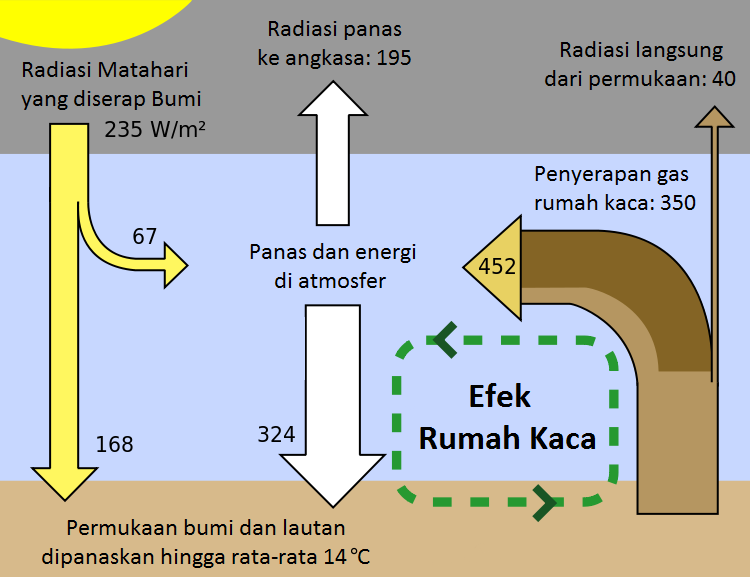

Efek rumah kaca, sang pisau bermata dua
Efek Rumah Kaca (Green House Effect) merupakan peristiwa terperangkapnya sinar matahari gelombang panjang (infra merah) oleh gas–gas rumah kaca (GRK) yang berada di lapisan troposfer sehingga meningkatkan suhu di bumi.
{kind=link}
Green House Effect pertama kali diusulkan oleh Joseph Fourier pada tahun 1824. Ia melihat fenomena adanya panas dalam ruang tertutup akibat penyinaran matahari. Hal ini sama dengan proses efek rumah kaca pada bumi, di mana panas yang masuk akan terperangkap di dalamnya dan tidak dapat menembus ke luar kaca, sehingga dapat menghangatkan seisi rumah kaca tersebut.
Cahaya matahari (radiasi gelombang pendek) yang menyentuh permukaan bumi diubah menjadi energi panas dan berfungsi menghangatkan matahari. Sebagian dari panas ini akan dipantulkan kembali oleh permukaan bumi ke angkasa luar sebagai radiasi infra merah gelombang panjang. Namun, sebagian panas yang dipantulkan diserap di atmosfer sehingga panas sinar tersebut terperangkap di atmosfer bumi. Peristiwa alam ini menyebabkan bumi menjadi hangat dan layak ditempati manusia. Karena jika tidak ada Efek Rumah Kaca maka suhu permukaan bumi akan 33 derajat Celcius lebih dingin.
Apa penyebab dari fenomena ini?
Efek rumah kaca disebabkan karena naiknya konsentrasi gas Karbondioksida (CO2) dan gas-gas lainnya di atmosfer. Dengan meningkatnya konsentrasi gas CO2 dan gas-gas lain di atmosfer maka semakin banyak pula gelombang panas yang dipantulkan bumi dan diserap atmosfer. Semakin banyak jumlah gas yang berada di atmosfer, maka semakin banyak pula panas matahari yang terperangkap di permukaan bumi. Akibatnya suhu permukaan bumi akan naik.
Bisakah kita mengurangi dampaknya?
Untuk mengatasi pemanasan global diperlukan usaha yang sangat keras karena hampir mustahil untuk diselesaikan saat ini. Pemanasan global memang sulit diatasi, namun kita bisa mengurangi efeknya. Penanggulangan hal ini adalah kesadaran kita terhadap kehidupan bumi di masa depan.
Kesimpulan
Efek rumah kaca sejatinya dibutuhkan untuk menjaga suhu bumi, supaya perbedaan suhu antara siang dan malam tidak terlalu besar. Namun efek rumah kaca yang berlebihan akan menyebabkan pemanasan global dimana suhu di bumi akan naik secara signifikan yang ditandai dengan hal-hal antara lain mencairnya es di kutub, rusaknya ekosistem, naiknya ketinggian permukaan air laut dan perubahan iklim yang ekstrim.